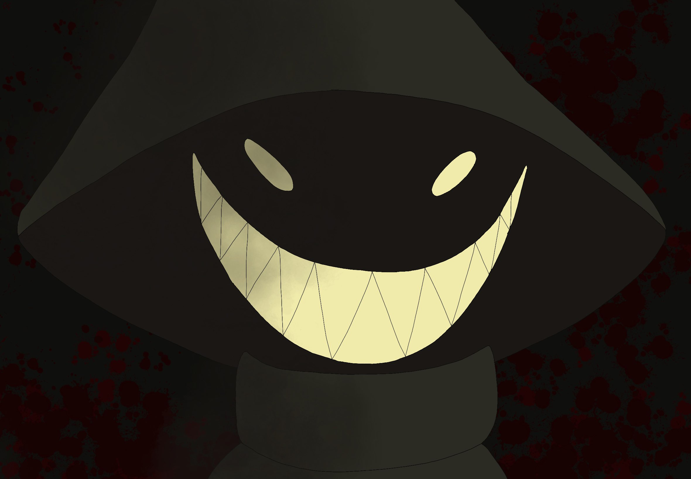

Moop
Moop are small deer-like creatures that live in the forests and grasslands. However, they can be seen all over the world due to their affinity for the Mysterious Men, whose travels are not limited to any particular biome.
Appearance

Every Mysterious Man wears a large green hat and a long green cloak. The hat is shaped somewhat like a pointed wizard's hat, in a large cone shape that obscures their face such that only a pair of glowing yellow eyes can be seen. Occasionally they may show their extremely pointed teeth, but this rarely occurs as they consider this a display of aggression. It is unknown what their physical form looks like beneath the hat and cloak.